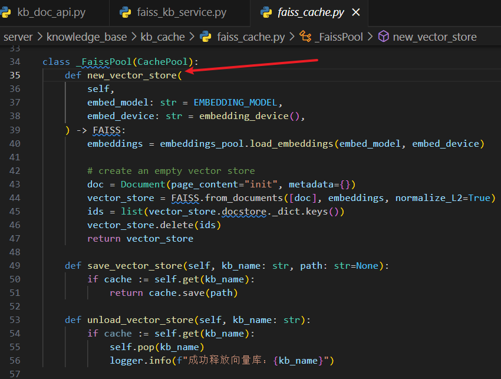
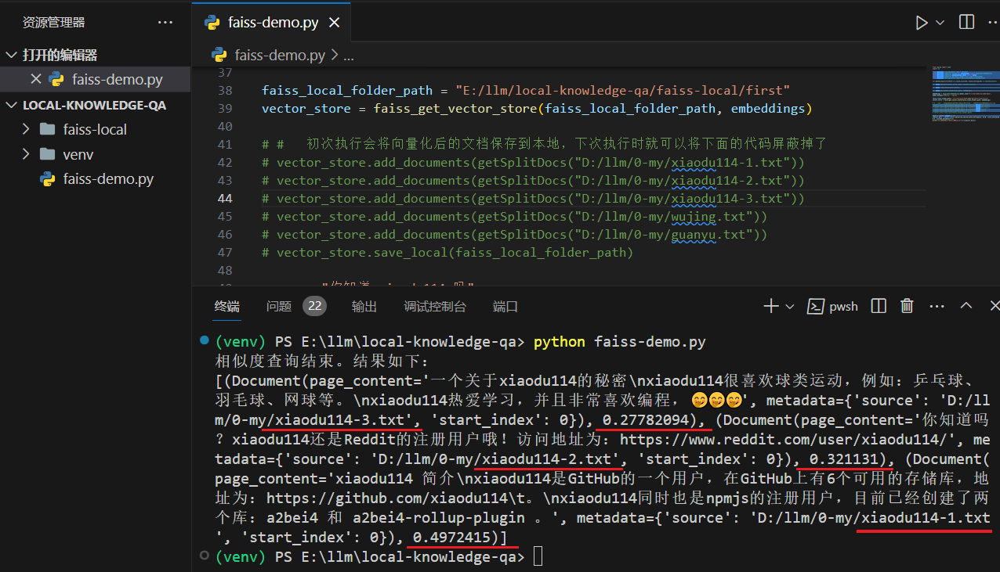
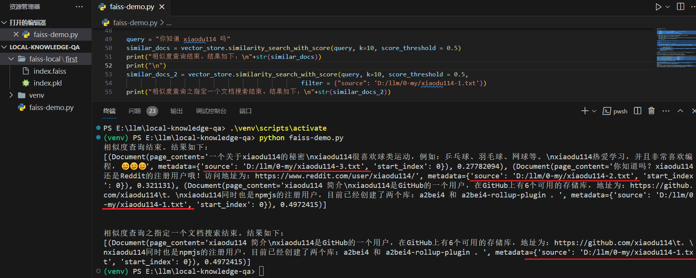
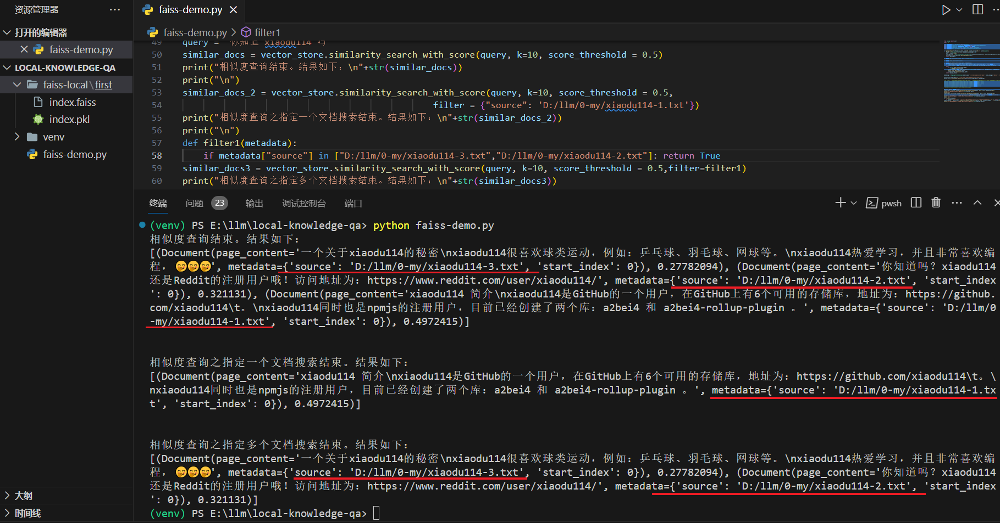
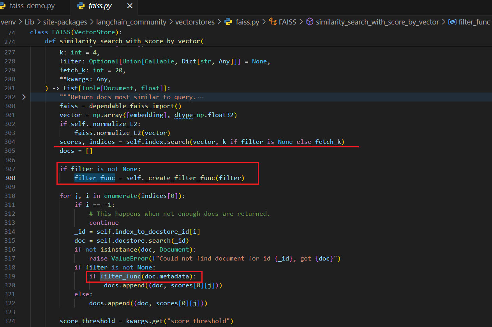
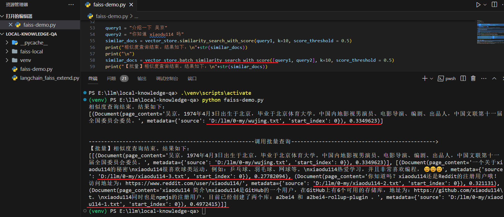

Faiss
简单记录一下对
官网：Welcome to Faiss Documentation — Faiss documentation
参考 Langchain-Chatchat
怎么知道的
当时使用的
知识库问答逻辑
server\api.py > api: /chat/knowledge_base_chat ->server\chat\knowledge_base_chat.py > def knowledge_base_chat ->server\knowledge_base\kb_doc_api.py > def search_docs ->server\knowledge_base\kb_service\base.py > def search_docs （调用各个向量库对应的实现）->server\knowledge_base\kb_service\faiss_kb_service.py > def do_search
在最后一步中你会看到
这里参考的是上图中的这条路线：本地如果没有，则新建一个；如果存在，则读取本地的。上图中如何读取本地的已经很明确，至于如果新创建一个还要看下图：

知识库新建和添加文档逻辑
上面的章节简单介绍了一下根据知识库问答的逻辑，那么知识库是怎么创建的，上传的文档又是怎么添加到知识库的？这个章节将介绍一下。
server\api.py > api: /knowledge_base/create_knowledge_base ->server\knowledge_base\kb_api.py > def create_kb ->server\knowledge_base\kb_service\base.py > def create_kb （调用各个向量库对应的实现）->server\knowledge_base\kb_service\faiss_kb_service.py > def do_create_kb > def load_vector_store ->server\knowledge_base\kb_cache\faiss_cache.py > class KBFaissPool > def load_vector_store
这里的最后一步又回到了第一张图中的获取
server\api.py > api: /knowledge_base/upload_docs ->server\knowledge_base\kb_doc_api.py > def upload_docs > def update_docs ->server\knowledge_base\kb_service\base.py > def update_doc ->-
server\knowledge_base\kb_service\base.py > def add_doc （调用各个向量库对应的实现）->方法中在保存到向量库之前还需要拆分文档，如下：
docs = kb_file.file2text() （位于 add_doc 方法中）->-
server\knowledge_base\utils.py > def file2text docs = self.file2docs() （文档对应的Loader读取文档）self.splited_docs = self.docs2texts() （拆分）
-
server\knowledge_base\kb_service\faiss_kb_service.py > def do_add_doc ids = vs.add_documents(docs) vs.save_local(self.vs_path)
过程就这样吧！是不是过几天再看就直接😵😵😵
自己练练
点击查看知识库中的文档
说明：开始使用的txt文档格式、UTF-8 编码，浏览器打开时乱码，所以改成了 json
第一版
上面代码想要运行起来还需要安装这些依赖（2024-03-25）：

不同格式的文档对应不同的
方法 getSplitDocs 的返回值格式：
vector_store.similarity_search_with_score 参数介绍，k : 返回的文档个数；score_threshold : 阈值。返回值得分：分数越小，相似度越高。这里将阈值控制在了0.5，搜索“你知道 xiaodu114 吗”时，如果不控制，那么吴京和关羽的内容也会返回回来
指定文档搜索
对于本地知识库，我们应该会有N多文档，那么如果我们只想根据其中的一个或者几个文档搜索，该如何处理？查看
指定一个文档
# 下面是新增加的代码
similar_docs_2 = vector_store.similarity_search_with_score(query, k=10, score_threshold = 0.5,
filter = {"source": 'D:/llm/0-my/xiaodu114-1.txt'})
print("相似度查询之指定一个文档搜索结束。结果如下：\n"+str(similar_docs_2))

指定多个文档
# 下面是新增加的代码
def filter1(metadata):
if metadata["source"] in ["D:/llm/0-my/xiaodu114-3.txt","D:/llm/0-my/xiaodu114-2.txt"]: return True
similar_docs3 = vector_store.similarity_search_with_score(query, k=10, score_threshold = 0.5,filter=filter1)
print("相似度查询之指定多个文档搜索结束。结果如下：\n"+str(similar_docs3))

小结
从查看

批量搜索
点击查看代码
下面看一下如何使用
# 引入本地依赖使用，这里指的是 langchain_faiss_extend.py
import sys
sys.path.append(".")
# 删掉上面示例代码中的这个
from langchain_community.vectorstores.faiss import FAISS
# 使用引入已经添加批量搜索的 FAISS
from langchain_faiss_extend import FAISS
# 调用批量查询
query1 = "介绍一下 吴京"
query2 = "你知道 xiaodu114 吗"
similar_docs = vector_store.batch_similarity_search_with_score([query1, query2], k=10, score_threshold = 0.5)
print("【批量】相似度查询结束。结果如下：\n"+str(similar_docs))
下面在看一下测试截图：

另起炉灶
这里不再依赖
第一版
第一次脱离
点击查看代码

图中可以看到“xiaodu114”相关的几个文档的得分和上面使用
上面示例代码中创建索引还可以使用
# 这是上面示例代码中的代码
index = faiss.IndexFlatL2(len(init_embedding))
# 你还可以这样
index = faiss.index_factory(len(init_embedding), 'Flat' ,faiss.METRIC_L2)
暂时还没有找到不同的索引和